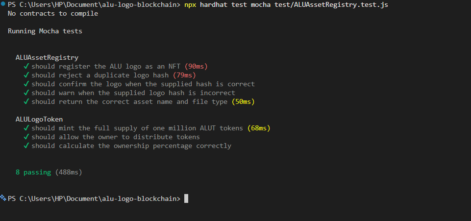

Abstract
This project records the SHA-256 fingerprint of the African Leadership University (ALU) logo in an ERC-721 asset registry and demonstrates fungible token distribution with an ERC-20 contract. It was built and tested with Hardhat on a local simulated blockchain; all eight project tests passed. The result is an educational prototype for asset identification and tokenisation, not a public-chain deployment or proof of legal ownership.
Contents
- Introduction
- Blockchain Setup
- Logo Fingerprint and Registration
- Smart Contract Explanation
- Tokenisation
- Test Results
- Local Deployment
- Reproducing the Project
- Challenges and Solutions
- Limitations and Future Improvements
- Conclusion
- Project Links
1. Introduction
Digital image files can be copied or modified, and visually similar copies can be difficult to distinguish. A cryptographic hash provides a compact fingerprint of a file: changing the file normally produces a different hash. Recording a known hash on a blockchain makes it possible for others to compare a file's independently calculated fingerprint with the recorded value.
A conventional database can also store a hash, but the organisation controlling that database can generally change its records. A blockchain can make accepted records independently auditable and harder to alter, depending on the network and its governance. Neither approach, by itself, proves who created a logo or whether its first registration was authorised. Copyright registration is a legal process; a smart contract does not replace it, grant intellectual-property rights, or establish that a registrant represents ALU.
A smart contract is program code deployed to a blockchain and executed by the network's nodes when users call it. Unlike an ordinary program running on one organisation's server, its execution and state changes are validated according to the blockchain's consensus rules. This contract does not include a function to edit or erase existing asset metadata; changing blockchain history would require overcoming the network's consensus and is not an ordinary administrator operation. This is a practical immutability guarantee, not a claim that every blockchain is impossible to alter under every circumstance.
This project demonstrates two complementary contract patterns. The ERC-721
ALUAssetRegistry creates a unique token for a registered asset record, while
the ERC-20 ALULogoToken issues interchangeable token units. Together they
illustrate how an asset fingerprint and a token distribution model can be represented in
smart contracts.
Project objectives
- Calculate the SHA-256 fingerprint of the supplied ALU logo file.
- Register the logo's metadata and hash in an ERC-721 contract.
- Reject duplicate content hashes and compare submitted hashes with the registered hash.
- Issue a fixed supply of one million ALUT tokens and demonstrate owner-controlled distribution.
- Compile, test, and deploy the contracts in a local Hardhat environment.
2. Blockchain Setup
Development was carried out on Windows using Visual Studio Code and PowerShell. Node.js and npm provide the JavaScript runtime and dependency management. Hardhat compiles the Solidity contracts, runs the test suite, and provides a local simulated Ethereum-compatible network for deployment and interaction. The local network runs on the development machine; it is not a public testnet or mainnet.
A wallet address is a public identifier for an account on a blockchain. It can receive cryptocurrency or tokens, and transactions from that account are authorised using its associated private key. The addresses printed by a local Hardhat node belong to disposable, pre-funded development accounts; their test ETH has no real-world value. A wallet address is not the same thing as its private key, and private keys should never be shared.
The project uses the Hardhat Toolbox Mocha/Ethers plugin. Ethers.js is used by the JavaScript tests and deployment script to deploy contracts and send transactions. OpenZeppelin Contracts supplies the standard ERC-721, ERC-20, and ownership implementations on which the project builds.
| Component | Version / configuration |
|---|---|
| Node.js | 22.23.4 |
| npm | 10.9.9 |
| Hardhat | 3.21.0 |
| Solidity compiler | 0.8.34 |
| Ethers.js | 6.17.0 |
| OpenZeppelin Contracts | 5.6.1 |
| Test framework | Mocha and Chai, through the Hardhat toolbox |
The Hardhat configuration is hardhat.config.ts and defines simulated L1 and
OP networks. The project uses the TypeScript configuration supported by its Hardhat 3
setup.
For the assignment's local-node demonstration, run
npx hardhat node --network hardhatMainnet. Hardhat starts a local JSON-RPC
blockchain and prints development account addresses in the terminal. The running node
accepts transactions and maintains simulated chain state for development.
3. Logo Fingerprint and Asset Registration
The file alu-logo.png was hashed locally with the SHA-256 algorithm. The
independently reproducible PowerShell command is:
Get-FileHash .\alu-logo.png -Algorithm SHA256
The verified SHA-256 digest is:
407BE7B9AC994BCCA2AB5E0C901B6471A149AA08FC9201F7BF546E6852FB9DDE
The same 32-byte value, represented as a 0x-prefixed hexadecimal string, is
supplied to the registry:
0x407be7b9ac994bcca2ab5e0c901b6471a149aa08fc9201f7bf546e6852fb9dde
The contract stores the hash supplied by the caller; it does not receive the image or calculate SHA-256 on-chain. To verify a file, a user must hash that file off-chain using the same algorithm and compare the result with the registered value. A match establishes that the bytes match the registered fingerprint, not that the image was officially approved by ALU.
SHA-256 has an avalanche effect: a tiny change to the input, such as changing one pixel and saving the image, is expected to produce a very different digest. This makes the hash useful for detecting file changes, but does not by itself prove who created or authorised the image.
4. Smart Contract Explanation
4.1 ALUAssetRegistry.sol — ERC-721 asset registry
This contract inherits OpenZeppelin's ERC-721 implementation. It assigns each accepted asset a unique token ID and stores the asset metadata against that ID.
AssetMetadatastruct: groups the asset name, file type, content hash, registering address, and registration timestamp.nextTokenId: holds the next ID to assign; it begins at 1.assetsmapping: associates each token ID with its metadata.registeredHashesmapping: records whether a hash has already been registered. Because it is public, Solidity generates a read-only getter for it.AssetRegisteredevent: announces a registration with the token ID, name, hash, and registering address.
| Function | Purpose |
|---|---|
constructor() |
Initialises the inherited ERC-721 token collection with the name “ALU Official Logo” and symbol “ALULOGO”. |
registerAsset(assetName, fileType, contentHash) |
Rejects empty names or file types, a zero hash, and a hash already recorded. It assigns the next ID,
safely mints the NFT to the caller, stores the metadata and timestamp, marks the hash as registered, emits
AssetRegistered, and returns the ID. Registration is permissionless: the contract does not
check whether the caller is authorised by ALU. |
verifyLogoIntegrity(tokenId, suppliedHash) |
Reverts if the token does not exist. Otherwise, it compares the supplied hash with the stored hash and returns a Boolean and a corresponding message. It compares values; it does not hash a file. |
getAsset(tokenId) |
Reverts if the token does not exist; otherwise, returns the full metadata record for that token ID. |
The contract also exposes inherited ERC-721 functions such as ownerOf for
checking token ownership. Transfer and approval behavior comes from OpenZeppelin's
ERC-721 implementation.
4.2 ALULogoToken.sol — ERC-20 token
This contract inherits OpenZeppelin's ERC-20 and Ownable implementations. Its custom functions and constructor are:
| Function | Purpose |
|---|---|
constructor(initialOwner) |
Sets the token name to “ALU Logo Token” and symbol to “ALUT”, sets the owner, rejects a zero initial owner, and mints the fixed supply of 1,000,000 tokens (scaled to 18 decimals) to that owner. |
distributeShares(recipient, amount) |
Can be called only by the owner. It rejects a zero recipient and a zero amount, then transfers the requested existing tokens from the owner to the recipient. It distributes tokens; it does not mint more. |
ownershipPercentage(account) |
Returns the account's balance as a whole-number percentage of the total supply. Solidity integer division truncates any fractional part. |
Standard ERC-20 functions such as balanceOf, transfer, and
totalSupply, and ownership functionality such as owner, are
inherited from OpenZeppelin rather than custom-written in this project.
5. Tokenisation
Tokenisation represents a record or unit of value using a digital token. In this project, the ERC-721 token is a unique identifier for a registered logo record, while each ERC-20 ALUT token is interchangeable with another ALUT token. The NFT and fungible token therefore demonstrate different purposes rather than duplicate one another.
In the current implementation, the account supplied as initialOwner receives
the entire initial ALUT supply. In a real ALU-authorised deployment, that could be a
wallet controlled by an approved ALU office or governance body, which could distribute
tokens to approved departments or participants under a separately agreed policy. The
present code does not identify any real ALU wallet or token holder; the local deployment
uses a development account.
Holding ALUT currently means holding transferable units from the fixed token supply. The contract calculates a holder's percentage of that supply, but it does not implement voting, dividends, royalties, legal equity, permission to use the ALU logo, or any other real-world rights. Such rights would need explicit legal authorisation, governance rules, and contract functionality. The word “ownership” in the function name refers only to the calculated share of the token supply.
6. Test Results
The assignment-specific suite in test/ALUAssetRegistry.test.js contains eight
tests. All eight passed. The full Hardhat run also executes five Counter sample tests
(two Mocha tests and three Solidity tests), for 13 passing tests overall.
| # | Test | What it checks | Result |
|---|---|---|---|
| 1 | Register the logo as an NFT | Registration succeeds; the caller owns token ID 1 and the hash is marked registered. | PASS |
| 2 | Reject a duplicate hash | A second registration with the same content hash reverts. | PASS |
| 3 | Verify the correct hash | The matching hash returns a successful authenticity result. | PASS |
| 4 | Reject a mismatched hash | A different hash returns a negative verification result. | PASS |
| 5 | Retrieve asset metadata | The name, file type, hash, registering address, and timestamp are correct. | PASS |
| 6 | Mint the initial ALUT supply | The name, symbol, total supply, and initial owner's balance are correct. | PASS |
| 7 | Distribute ALUT | The owner can transfer the requested amount to a recipient. | PASS |
| 8 | Calculate token percentage | Balances representing 75% and 25% of supply return those whole-number percentages. | PASS |

The screenshot is included as test-results2.png in the project. It should be
refreshed if the test output changes before final submission.
7. Local Deployment
The script scripts/deploy.js deploys both contracts to the configured local
Hardhat network. It then registers the logo and prints the deployed addresses and asset
metadata. The demonstrated command is:
npx hardhat run .\scripts\deploy.js --network hardhatMainnet
| Deployment output | Recorded value |
|---|---|
| Deployer / NFT owner | 0xf39Fd6e51aad88F6F4ce6aB8827279cffFb92266 |
| ALUAssetRegistry | 0x5FbDB2315678afecb367f032d93F642f64180aa3 |
| ALULogoToken | 0xe7f1725E7734CE288F8367e1Bb143E90bb3F0512 |
| Registered asset | ALU Official Logo, PNG, token ID 1 |
| Registered hash | 0x407be7b9ac994bcca2ab5e0c901b6471a149aa08fc9201f7bf546e6852fb9dde |
8. Reproducing the Project
Install Node.js and npm, then open PowerShell in the cloned project folder:
git clone https://github.com/Angel-ingabire/alu-logo-blockchain.git cd alu-logo-blockchain npm install
Compile the contracts:
npx hardhat compile
Run the tests:
npx hardhat test
Deploy both contracts and register the logo on the local simulated network:
npx hardhat run .\scripts\deploy.js --network hardhatMainnet
The local workflow does not require public-network funds or an RPC endpoint. A public testnet deployment would require additional network configuration and a funded test account.
9. Challenges and Solutions
Hardhat 3 configuration
Hardhat 3 uses APIs and plugin configuration that differ from many Hardhat 2 tutorials.
The project uses the Hardhat Toolbox Mocha/Ethers plugin and the Hardhat 3
network.create() API in its tests and deployment script.
Representing the hash
SHA-256 produces a 32-byte digest displayed as 64 hexadecimal characters. Solidity's
bytes32 type stores that value. Hexadecimal letter case does not change the
represented bytes; the tests normalise case when comparing hash strings.
Distinguishing token standards
ERC-721 represents unique token IDs, whereas ERC-20 represents interchangeable units. Implementing both helped separate the asset-registration record from the fungible distribution demonstration.
Keeping the deployment local
A local simulated chain allowed the contracts and deployment flow to be tested without testnet configuration or funds. The trade-off is that local success is not evidence of a public-chain deployment or a production security review.
10. Limitations and Future Improvements
- Introduce an authorisation and governance process before accepting official asset registrations.
- Deploy to a public testnet and verify the source code through a block explorer.
- Add tests for invalid inputs, access-control boundaries, and additional ERC-721/ERC-20 interactions.
- Build a user interface that calculates file hashes locally and helps users register or verify assets.
- Define legal and governance terms before connecting tokens to any real-world ownership or financial rights.
In particular, the current registry is permissionless: the first caller can register a hash and receive its NFT. Duplicate prevention protects against repeat registration of that same hash, but it does not establish that the first registration is official.
11. Conclusion
The ALU Logo Blockchain project demonstrates a way to record a file fingerprint and associate it with an ERC-721 asset record, alongside a separate ERC-20 token distribution example. The contracts compiled, all eight assignment-specific tests passed, and the deployment script completed on a local simulated blockchain.
The work provided practical experience with Solidity, ERC token standards, SHA-256, Hardhat, automated testing, and local deployment. It also shows why a hash or token alone cannot establish legal ownership, official authorisation, or public-chain deployment. With more time, the project could add registration governance, a verification interface, broader tests, and an authorised public testnet demonstration.
12. Project Links
Public GitHub repository: https://github.com/Angel-ingabire/alu-logo-blockchain
Final Submission Checklist
- Replace the video reminder above with the working shareable video link.
- Insert a screenshot of the PowerShell SHA-256 result for
alu-logo.png. - Insert a screenshot of the local Hardhat node's development wallet addresses; do not include private keys.
- Check that Figure 1 and the logo image display correctly in the exported PDF.
- Save/export this report as
Project_Report.pdf. - Include the PDF and the required source files in the submission ZIP.
- Confirm the requested Hardhat configuration filename with the assignment: this project currently uses
hardhat.config.ts.